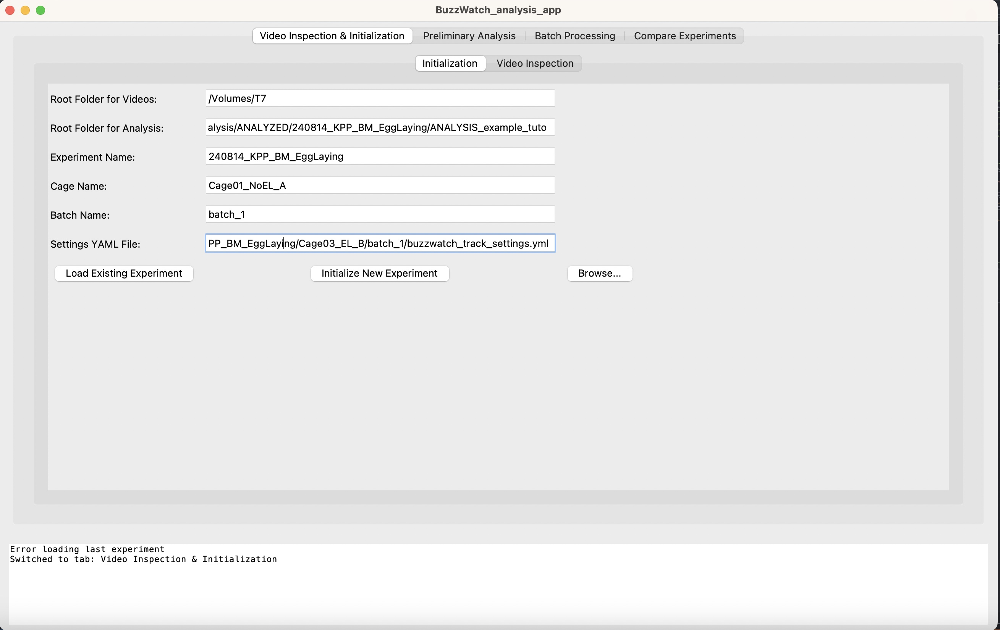
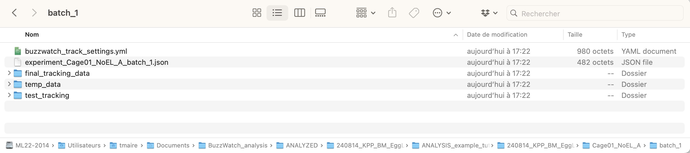
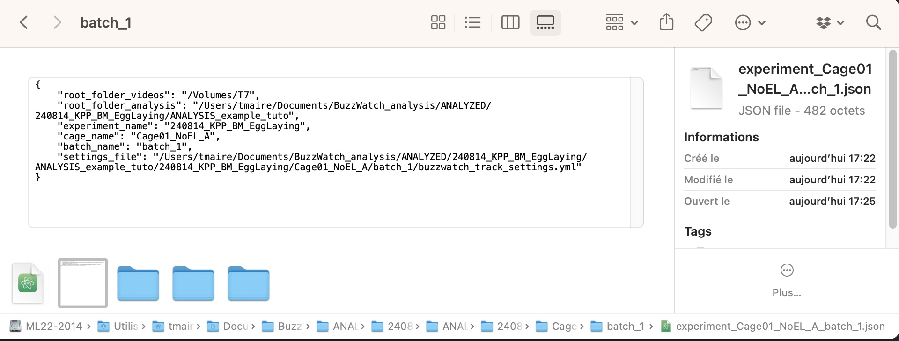
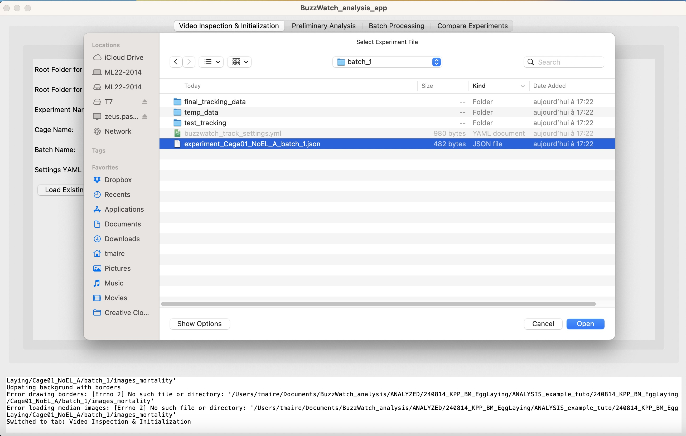
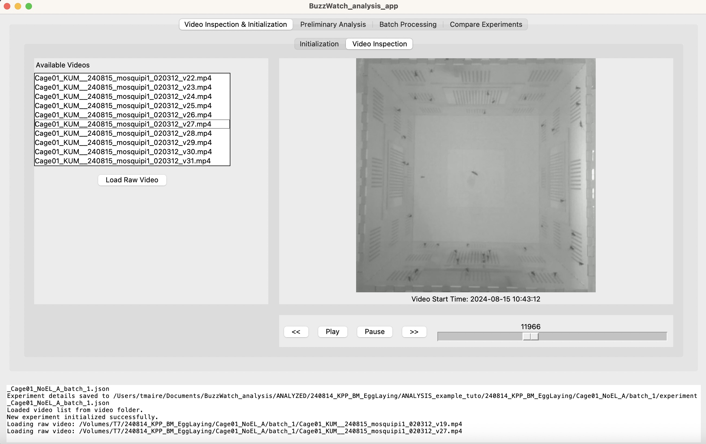
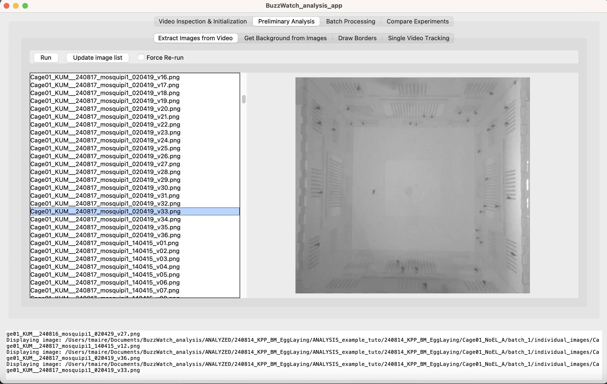
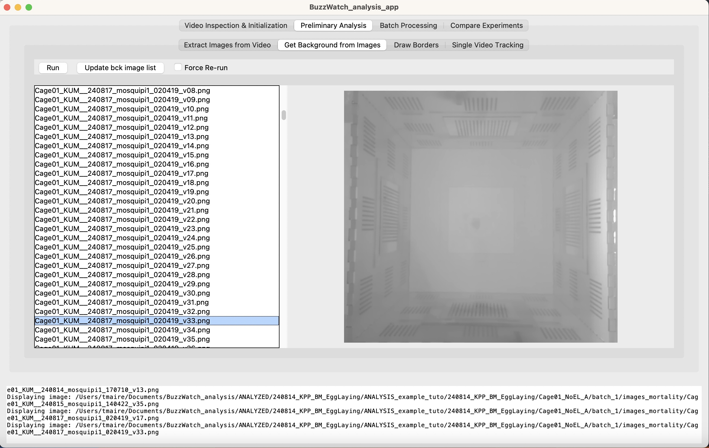
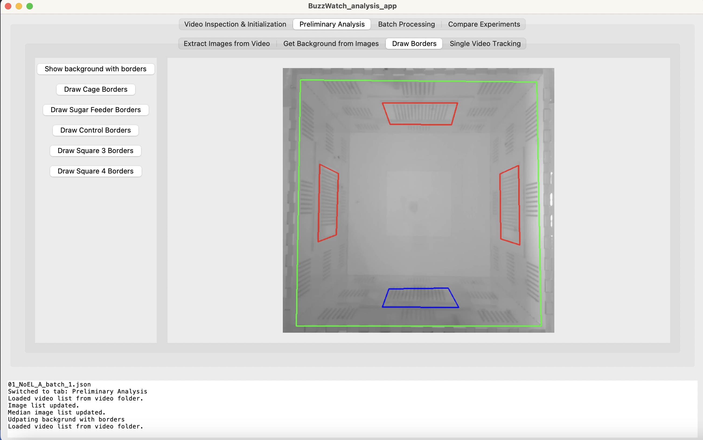
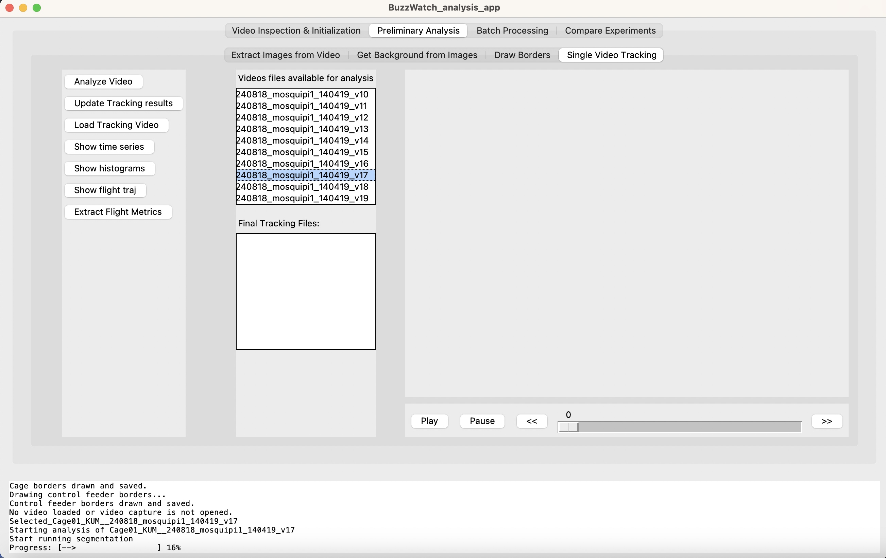

- 4.1 - Install buzzwatch_analysis python packages
- 4.2 - Segmentation and tracking strategy
- 4.3 - Test analysis on single video
- 4.4 - Run analysis in batch
- 4.5 - QC
4.1 - Download and set-up BuzzWatch app
4.2 - Preliminary analysis
a. Activate the virtual environment:
conda activate buzzwatch_envb. Go to the folder where the app is:
cd path_to_buzzwatch_appc. Start the app:
python3 buzzwatch_analysis_app.pyd. First, organize your .mp4 videos in folders with the following structure:
ROOT_FOLDER_VIDEOS/
└── EXPERIMENT_NAME/
└── CAGE_NAME/
└── BATCH_NAME/
└── video_files.mp4For example, a video path might look like this:
/Volumes/T7/240814_KPP_BM_EggLaying/Cage01_NoEL_A/batch_1/video_001.mp4The "BATCH_NAME" usually corresponds to different weeks of recording, in between sugar feeder change (and potentially moving the cages, causing background modification)
e. Choose a folder "ROOT_FOLDER_ANALYSIS" where all the analyzed data will be and copy all the info in app
 The "Settings YAML File" should the path to a template "buzzwatch_track_settings.yml" used for another analysis. If it's the first analysis, you can download such a file here :f. Click on "Initialize New Experiment". Then it should look like this in the analysis folder created
It created the path for analysis and a .json file with all information entered above. It's possible to edit directly this file to start a new analysis. In that case you just need to create the correct folder strucutre for the analysis path and copy a "buzzwatch_track_settings.yml" and a "experiment_name.json" yourself in that folder
In this case or if the app was closed after initializing the experiment analysis, you can start it by clicking "Load Existing Experiment" and looking for the .json file
Then by going on the tab "Video Inspection" you scroll through the .mp4 videos
Switch to "Preliminary analysis" tab, and "Extract Images from Video" sub-tab, and click on "Run", this will extract 1 image per .mp4 video
To visualize the images, you can click on "Update image list" and scroll. You can also find the images directly in the "individual_images" folder
Switch to the "Get Background from Images" tab and click "Run" to compute and save 1 background per videos, from a centered 100 videos window (-50,+50) using the images extracted in the previous step. This operation can take a few minutes
To visualize the background images, you can click on "Update bck image list" and scroll. You can also find the images directly in the "images_mortality" folder.
At this stage you can already compute the survival curve using these images, although this is not required for next analysis step. This will be necessary at the "Compare experiments" tab, where it is required to normalizing the time series by the number of alive mosquitoes.
To generate the excel file to be used as survival curve, see **Insert url link here**
Here is a video that summarizes the previous steps
Switch to "Draw Borders" sub-tab. Then click on "Show background with borders". This should show an image such as this one :
 It is using one of the background image generated earlier and the coordinates information of the different borders as defined in the "buzzwatch_track_settings.yml" file. At this stage this file might correspond to a different dataset so the borders should not match exactly. To adjust precisely the borders, click on "Draw Cage Borders". Then left click on the 4 edges successively. Once you are done, press "s" on the keyboard. The updated border should show up. If it's not correct, just re-start it. Only the last edit will be automatically saved to the buzzwatch_track_settings.yml file.Here is a video of the process :
Switch to the "Single Video Tracking" subtab, you can select a video in the window "Videos files...", then click on Analyze Video. This should look like this
Once the analysis is finished (notification in the log window below), click on "Update tracking results" to display the completed tracking files in the "Final Tracking Files"
Once you analyzed a few representative videos, and that the result is satisfying, you can start analyze in batch mode